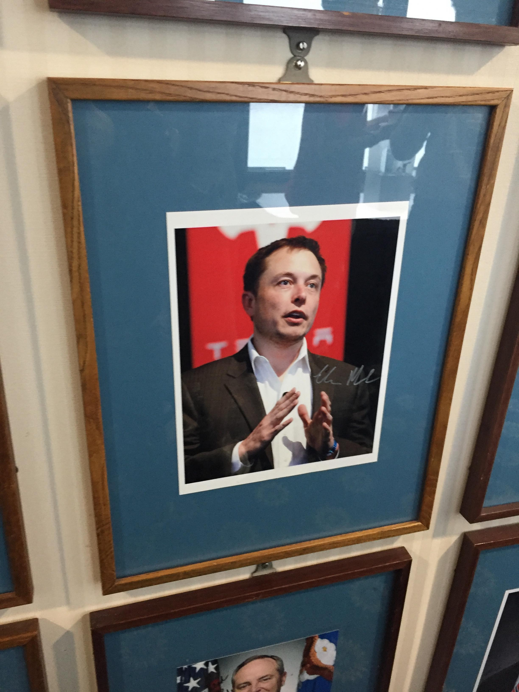
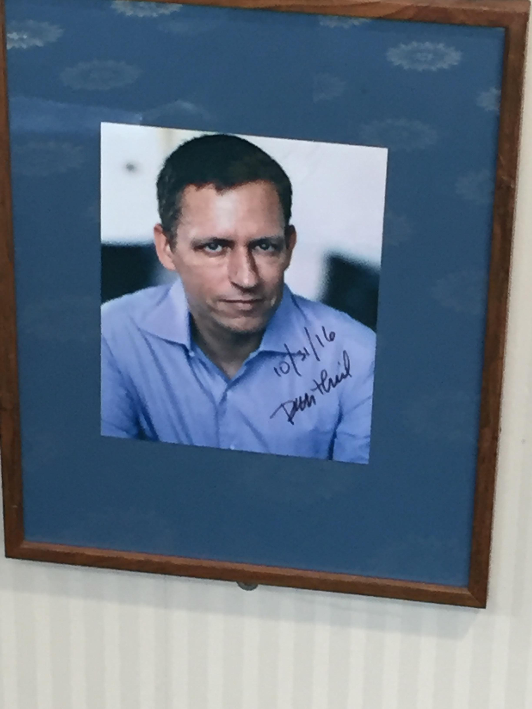

I recently attended the Pulitzer Center’s Beyond Religion at the National Press Club on Saturday, and decided to write about what I heard about that day from many fascinating speakers.
Panel One
The first panel was The Role of Religion in Building Peace. There were several people on the panel, Cathy Otten, a freelance journalist who covered the ISIS insurgency in Iraq, Oge Onbogu, a member of the United States Institute for Peace who tried to broker peace between various groups in Nigeria. Then there was Danny Gold, a journalist who covered the role religion has in creating peace in gang conflicts in El Salvador, and Shaun Casey, the former director of the U.S. State Department’s Office of Religion and Global Affairs.
The panel first went through the individual experiences that each person had, before opening the floor to panelist wide questions. For example, in Iraq, Cathy Otten discovered that religious traditions were being used to minimize conflicts between the Yezidis and Sunni groups. Unfortunately, the War on Terror disrupted this relationship, which later had horrific consequences when ISIS entered Sinjar in 2014 and enacted the Sinjar massacre.
In San Salvador, much of the audience discovered that Evangelical and Catholic Church’s are seen as a path out from gang life in El Salvador. For starters, due to the low trust that everyone in the country has of their own government, only the various church’s remained respectable authority figures in the country outside of the gangs. If a gang member decides he wants to leave his gang, he has the option of becoming a devote Evangelical or Catholic as a way of leaving his gang. However, if he is seen doing un-Christian acts, the consequences for him can be horrific, as he is seen as not following his word.
Next, Oge Onubogu spoke about her experience in trying to broker peace between different religious groups in Nigeria. Her point was that quite frankly it is not the best idea to parachute in and think that your lived experience is the same as a Sahel pastoralist. Additionally, these things take time! One cannot expect immediate results by putting two conflicting groups in a room together. Building peace is fundamentally a process.
Shaun Casey also talked about the fact that diplomacy is fundamentally a process and does not often deliver results immediately. He noted the fact that what the local embassy might want, versus what is safe for the people that they are working with, are often two very different things. For example, he noted that when working with LGBTQA individuals in less developed countries, doing any work exposed in public often ends badly for them, despite the desire of the State Department for public outreach.
A dichotomy to note especially in the Middle East is that between gangster and terrorist. ISIS for example, behaved much like a gang, starting by extorting people who lived in the region in Iraq and Syria where they operated. The behavior of extremist groups often mirrors that of their mundane counterparts. However, this relationship can also be used to mislabel groups. For example, many religious conflicts in Nigeria are actually conflicts based on the strife between the needs of sedentary versus pastoralist groups in the country. However, the gangsterism => terrorism pipeline is unfortunately a very common one, as groups become revanchist towards whoever reduced them to penury. The Somali response to the Ethiopian invasion of Somalia in 2006 is a example of how the loss of livelihoods leads to gangsterism and soon revanchist terrorism.
Panel Two
The next panel was Religion & Fundamentalism, which was moderated by Indira Lakshmanan. The people on this panel included Ben Taub, a New Yorker writer who wrote on Iraq’s Post-ISIS Campaign of Revenge, Sarah Topol, a journalist who for the New York Times covered Boko Haram, Dalia Mogahed, the director of research for ISPU, and Amit Madheshiya, a Cannes winning film director.
The theme of this topic was less journalistic focused, and more a overview of various types of religious fundamentalism, the groups associated with them, and the resulting consequences. Ben Taub, for example talked about the tragedy that w’as Yezidi male children being forcefully conscripted into ISIS, and then ostracized by their communities on their return, as they are seen as tainted. Amit Madheshiya spoke that in India, that the rise of Hindu fundamentalism has resulted in vigilante brigades going after Muslims who are perceived as slaughtering cows, and often lynching them, and even not caring if the lynching is being recorded, as they like the publicity.
As a side note, this seems to be a pretty common phenomena. The movie The Act of Killing, goes into the various dirty conflicts that happened in Indonesia in the 60’s & 70’s. The killers in that movie as well were somewhat pleased with the fact that they were able to get a audience to talk about their violent acts as well.
To return to America, Dalia Mogahed talked about the skewed coverage of extremist violence in the United States. She noted that muslim extremists get more coverage in the United States, even if white nationalist violence is the more common act of extremist violence in the United States. Even in the DoJ, the way Islamic terror press releases is very different then the way a white nationalist is written up, with the white nationalist being given a more generous write up.
Another way the perception of religion is off, is that more religious people when surveyed on acts of terrorism were against the acts of terrorism, it was people who were revanchist for other reasons who ended up supporting acts of terrorism.
During the question period, one depressing note came up, that the people who often cover this are often freelancers who do not get paid to be in such violent places, and often lack protection.
Other
On one of the walls, they have pictures with signatures from many famous people from various industries. I do not know the prerequisites to be on the wall, but it was amusing to see that both Elon Musk and Peter Theil had photos of themselves with their signatures hanging up on the wall.
 
Richard Holbrooke in both talks was referenced, they just threw him out there as an exemplar American foreign service person, but did not expand on why they were referring to him.
It was interesting to listen to everyone there, but it felt there was a layer of abstraction between the topic versus the people in the audience. It felt like everyone was larping as an agnostic, except for the several religious figures who were present as panelist or conference goers. It felt a little bit like religious reporting was something that only occurred outside of the United States, when that is not the case.